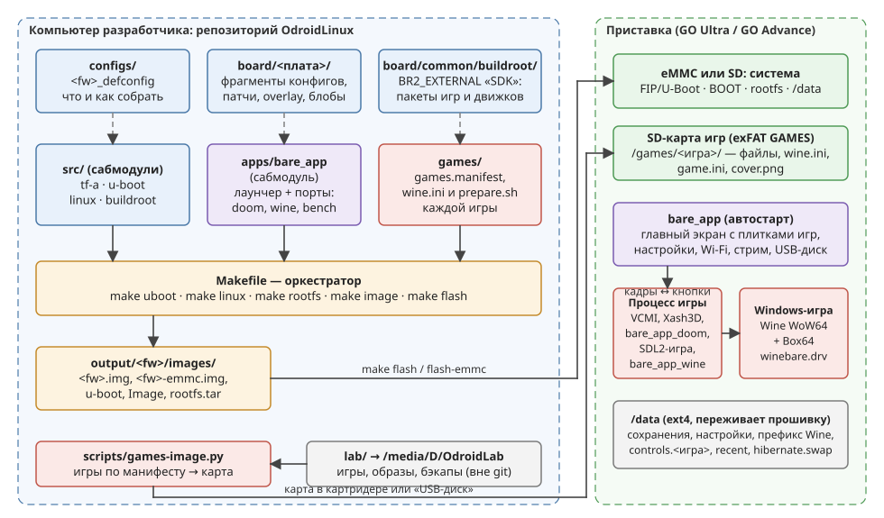
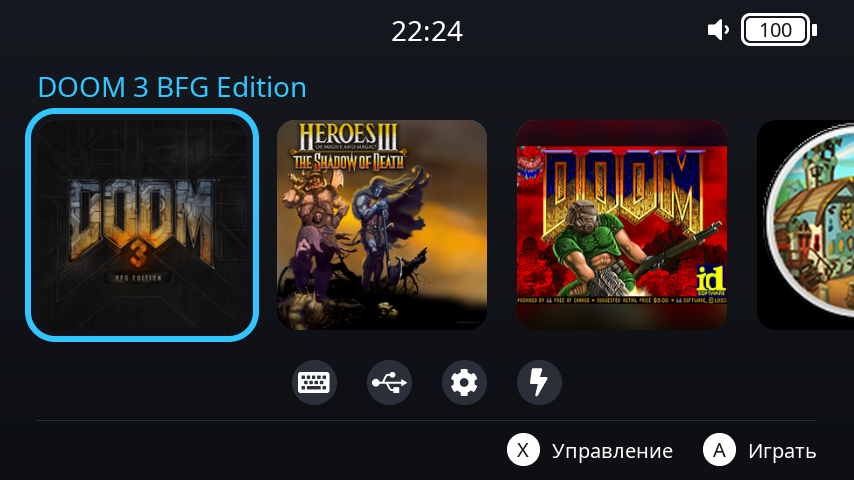

OdroidLinux — вики проекта
OdroidLinux — это SDK для сборки собственной прошивки портативных приставок
ODROID-GO Advance и ODROID-GO Ultra (а также BeagleBone Black и Raspberry Pi) из
mainline-компонентов: TF-A, U-Boot, Linux, Buildroot. Поверх системы работает
собственный лаунчер bare_app (LVGL), который запускает игры: Героев III (VCMI),
Half-Life (Xash3D), Doom, DOOM 3 BFG, Return to Castle Wolfenstein, SDL2-порты и
Windows-игры под Wine (WoW64 + Box64) — все на одной приставке, с геймпада, с
обложками на главном экране, сохранениями на /data и играми на карте GAMES.


Главный экран bare_app на ODROID-GO Ultra (снимокogu-ctl.py shot, 854×480).
Страницы
| Страница | О чём |
|---|---|
| 1. Устройство SDK | репозиторий, сабмодули, Makefile-оркестратор, конфиг прошивки, патчи, пакеты Buildroot, сборка и перепрошивка |
| 2. Загрузка и разметка дисков | цепочки загрузки плат, разметка SD/eMMC, разделы /data и /games, карта игр exFAT, USB-диск |
| 3. bare_app — лаунчер | слои и потоки приложения, главный экран, игры как отдельные процессы, протокол game_ipc.h, экран управления, монитор, трансляция |
| 4. Игры: как устроены | три пути запуска игр, реестр game_def, стек Wine, драйверы SDL2 bareapp, движки и их патчи, где что лежит на плате |
| 5. Добавление новой игры | пошагово: Windows-игра под Wine, SDL2-игра из пакета, игра со своим движком; манифест и обложки; проверка на приставке |
| 6. Нюансы и подводные камни | всё, на что уже наступали: только чтение /games, exFAT, префикс Wine, патчи и -dirclean, память при сборке, DirectInput и мышь, шрифты |
| 7. Инструменты | games-image.py, ogu-ctl.py, oga-serial.py, doom3-test.py, симулятор на ПК, снимки экрана |
| 8. Платы | особенности GO Advance, GO Ultra, BBB, RPi: консоль, прошивка eMMC, быстрая загрузка, гибернация, часы, питание |
С чего начать
sudo apt install mtools gcc-aarch64-linux-gnu gcc-arm-linux-gnueabihf
git submodule update --init --recursive
make ogu_defconfig # или oga_defconfig
make # TF-A/U-Boot + ядро + rootfs + образ, по очереди
make info # какая прошивка выбрана, пути, версии
make flash DEV=/dev/sdX # SD-карта; GO Ultra с eMMC: make flash-emmc (Vol+ при включении)
Первая сборка занимает часы (тулчейн, ядро, VCMI, Wine) и около 21 ГБ в output/.
Игры в образ не входят: их раскладывает по карте scripts/games-image.py по
манифесту games/games.manifest (см. страницу 5).
Где лежат подробности
Эта вики — карта проекта и объяснение «почему так». Точные справочники остаются в репозитории и в вики на них есть ссылки:
- docs/config.md — все переменные конфига прошивки;
- docs/sd-layout.md — разметка карты до сектора;
- docs/patches.md — где лежат патчи и что пересобирается;
- docs/adding-a-game.md и apps/bare_app/docs/GAMES.md — добавление игры с примерами кода;
- apps/bare_app/docs/ARCHITECTURE.md — архитектура лаунчера до уровня файлов;
- apps/bare_app/README.md — что умеет лаунчер, кнопки каждой игры;
- games/README.md — манифест и список игр;
- docs/boards/ — страницы плат;
- книги
docs/book,docs/dev-book,docs/check-book— как устроен SDK, разработка на нём, проверка плат.
Картинки вики лежат в docs/wiki/img/: схемы рисует скрипт
docs/wiki/img/mkdiagrams.py (чистый Python, без библиотек), снимки экрана
приставки в img/shots/ сняты scripts/ogu-ctl.py shot:. Менять схему —
значит править скрипт и запускать заново.
HTML-версия: python3 docs/wiki/build-html.py собирает те же страницы в
docs/wiki/html/ (открывать index.html; каталог самодостаточен — картинки и
стиль внутри, ссылки на файлы репозитория ведут относительно него).